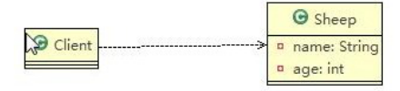
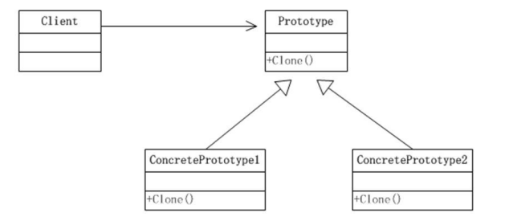

# 克隆羊问题
现在有一只羊 tom，姓名为: tom, 年龄为：1，颜色为：白色，请编写程序创建和 tom 羊 属性完全相同的 10
只羊。
# 🐱🏍传统方式解决克隆羊问题

package com.atguigu.prototype; | |
public class Client { | |
public static void main(String[] args) { | |
// TODO Auto-generated method stub | |
// 传统的方法 | |
Sheep sheep = new Sheep("tom", 1, "白色"); | |
Sheep sheep2 = new Sheep(sheep.getName(), sheep.getAge(), sheep.getColor()); Sheep sheep3 = new Sheep(sheep.getName(), sheep.getAge(), sheep.getColor()); Sheep sheep4 = new Sheep(sheep.getName(), sheep.getAge(), sheep.getColor()); | |
Sheep sheep5 = new Sheep(sheep.getName(), sheep.getAge(), sheep.getColor()); | |
//.... | |
System.out.println(sheep); System.out.println(sheep2); System.out.println(sheep3); System.out.println(sheep4); System.out.println(sheep5); | |
//... | |
} | |
} |
# 🐱👤传统的方式的优缺点
优点是比较好理解，简单易操作。
在创建新的对象时，总是需要重新获取原始对象的属性，如果创建的对象比较复杂时，效率较低
总是需要重新初始化对象，而不是动态地获得对象运行时的状态，不够灵活
改进的思路分析
** 思路：**Java 中 Object 类是所有类的根类，Object 类提供了一个 clone () 方法，该方法可以将一个 Java 对象复制一份，但是需要实现 clone 的 Java 类必须要实现一个接口 Cloneable，该接口表示该类能够复制且具有复制的能力 => 原型模式
# 原型模式 - 基本介绍
原型模式 (Prototype 模式) 是指：用原型实例指定创建对象的种类，并且通过拷贝这些原型，创建新的对象
原型模式是一种创建型设计模式，允许一个对象再创建另外一个可定制的对象，无需知道如何创建的细节
工作原理是：通过将一个原型对象传给那个要发动创建的对象，这个要发动创建的对象通过请求原型对象拷贝它们自己来实施创建，即 对象 **.clone**()
形象的理解：孙大圣拔出猴毛， 变出其它孙大圣
# 🙌原型模式原理结构图 - uml 类图

# ✨原理结构图说明
Prototype : 原型类，声明一个克隆自己的接口
ConcretePrototype: 具体的原型类，实现一个克隆自己的操作
Client: 让一个原型对象克隆自己，从而创建一个新的对象 (属性一样）
# 原型模式解决克隆羊问题的应用实例
使用原型模式改进传统方式，让程序具有更高的效率和扩展性。
# 🤳代码实现
/** | |
* @author WangXuefeng | |
* @version 1.0 | |
* @date 2021/5/31 19:38 | |
* @description 浅克隆 | |
*/ | |
public class Sheep implements Cloneable { | |
public String name; | |
public int age; | |
public Sheep friend; | |
public Sheep(String name, int age, Sheep friend) { | |
this.name = name; | |
this.age = age; | |
this.friend = friend; | |
} | |
public Sheep(String name, int age) { | |
this.name = name; | |
this.age = age; | |
} | |
public Sheep() { | |
} | |
@Override | |
protected Object clone() { | |
try { | |
return super.clone(); | |
} catch (CloneNotSupportedException e) { | |
e.printStackTrace(); | |
} | |
return null; | |
} | |
} | |
class Client { | |
public static void main(String[] args) { | |
Sheep sheep = new Sheep(); | |
sheep.age = 18; | |
sheep.name = "喜羊羊"; | |
Sheep friend = new Sheep("美羊羊",10); | |
sheep.friend = friend; | |
Sheep sheep1 = (Sheep) sheep.clone(); | |
Sheep sheep2 = (Sheep) sheep.clone(); | |
Sheep sheep3 = (Sheep) sheep.clone(); | |
System.out.println(sheep + " ====hashcode --> " +sheep.hashCode() + "\t sheep的friend ---> " + sheep.friend); | |
System.out.println(sheep1 + " ====hashcode --> " +sheep1.hashCode() + "\t sheep1的friend ---> " + sheep1.friend); | |
System.out.println(sheep2 + " ====hashcode --> " +sheep2.hashCode() + "\t sheep2的friend ---> " + sheep2.friend); | |
System.out.println(sheep3 + " ====hashcode --> " +sheep3.hashCode() + "\t sheep3的friend ---> " + sheep3.friend); | |
} | |
} | |
// 打印结果 | |
com.wxf.design.prototype.Sheep@74a14482 ====hashcode --> 1956725890 sheep的friend ---> com.wxf.design.prototype.Sheep@1540e19d | |
com.wxf.design.prototype.Sheep@677327b6 ====hashcode --> 1735600054 sheep1的friend ---> com.wxf.design.prototype.Sheep@1540e19d | |
com.wxf.design.prototype.Sheep@14ae5a5 ====hashcode --> 21685669 sheep2的friend ---> com.wxf.design.prototype.Sheep@1540e19d | |
com.wxf.design.prototype.Sheep@7f31245a ====hashcode --> 2133927002 sheep3的friend ---> com.wxf.design.prototype.Sheep@1540e19d |
# 深入讨论 - 浅拷贝和深拷贝
# 🎶 浅拷贝的介绍
对于数据类型是基本数据类型的成员变量，浅拷贝会直接进行值传递，也就是将该属性值复制一份给新的对象。
对于数据类型是引用数据类型的成员变量，比如说成员变量是某个数组、某个类的对象等，那么浅拷贝会进行引用传递，也就是只是将该成员变量的引用值（内存地址）复制一份给新的对象。因为实际上两个对象的该成员变量都指向同一个实例。在这种情况下，在一个对象中修改该成员变量会影响到另一个对象的该成员变量值
前面我们克隆羊就是浅拷贝
浅拷贝是使用默认的 clone () 方法来实现 sheep = (Sheep) super.clone ();
# 🐱🚀深拷贝基本介绍
复制对象的所有基本数据类型的成员变量值
为所有引用数据类型的成员变量申请存储空间，并复制每个引用数据类型成员变量所引用的对象，直到该对象可达的所有对象。也就是说，对象进行深拷贝要对整个对象 **(包括对象的引用类型)** 进行拷贝
深拷贝实现方式 1：重写 clone 方法来实现深拷贝
深拷贝实现方式 2：通过对象序列化实现深拷贝 (推荐)
🤳深拷贝方式 1 代码
/** | |
* @author WangXuefeng | |
* @version 1.0 | |
* @date 2021/5/31 19:44 | |
* @description 深克隆方式一 弊端：如果还依赖其他类的话那么 clone 方法还需要增加对应的代码 | |
*/ | |
public class SheepDeep1 implements Cloneable{ | |
public String name; | |
public int age; | |
public SheepDeep1 friend; | |
public SheepDeep1(String name, int age, SheepDeep1 friend) { | |
this.name = name; | |
this.age = age; | |
this.friend = friend; | |
} | |
public SheepDeep1(String name, int age) { | |
this.name = name; | |
this.age = age; | |
} | |
public SheepDeep1() { | |
} | |
@Override | |
protected Object clone() { | |
try { | |
SheepDeep1 clone = (SheepDeep1) super.clone(); | |
if(clone.friend != null){ | |
clone.friend = (SheepDeep1) friend.clone(); | |
} | |
return clone; | |
} catch (CloneNotSupportedException e) { | |
e.printStackTrace(); | |
} | |
return null; | |
} | |
} | |
class Deep1Client { | |
public static void main(String[] args) { | |
SheepDeep1 sheep = new SheepDeep1(); | |
sheep.age = 18; | |
sheep.name = "喜羊羊"; | |
SheepDeep1 friend = new SheepDeep1("美羊羊",10); | |
sheep.friend = friend; | |
SheepDeep1 sheep1 = (SheepDeep1) sheep.clone(); | |
SheepDeep1 sheep2 = (SheepDeep1) sheep.clone(); | |
SheepDeep1 sheep3 = (SheepDeep1) sheep.clone(); | |
System.out.println(sheep + " ====hashcode --> " +sheep.hashCode() + "\t sheep的friend ---> " + sheep.friend); | |
System.out.println(sheep1 + " ====hashcode --> " +sheep1.hashCode() + "\t sheep1的friend ---> " + sheep1.friend); | |
System.out.println(sheep2 + " ====hashcode --> " +sheep2.hashCode() + "\t sheep2的friend ---> " + sheep2.friend); | |
System.out.println(sheep3 + " ====hashcode --> " +sheep3.hashCode() + "\t sheep3的friend ---> " + sheep3.friend); | |
} | |
} | |
// 输出 | |
com.wxf.design.prototype.deep.SheepDeep1@74a14482 ====hashcode --> 1956725890 sheep的friend ---> com.wxf.design.prototype.deep.SheepDeep1@1540e19d | |
com.wxf.design.prototype.deep.SheepDeep1@677327b6 ====hashcode --> 1735600054 sheep1的friend ---> com.wxf.design.prototype.deep.SheepDeep1@14ae5a5 | |
com.wxf.design.prototype.deep.SheepDeep1@7f31245a ====hashcode --> 2133927002 sheep2的friend ---> com.wxf.design.prototype.deep.SheepDeep1@6d6f6e28 | |
com.wxf.design.prototype.deep.SheepDeep1@135fbaa4 ====hashcode --> 325040804 sheep3的friend ---> com.wxf.design.prototype.deep.SheepDeep1@45ee12a7 |
🤳深拷贝方式 2 代码
/** | |
* @author WangXuefeng | |
* @version 1.0 | |
* @date 2021/5/31 20:00 | |
* @description 深克隆方式二 通过序列化与反序列进行克隆 （推荐） | |
*/ | |
public class SheepDeep2 implements Cloneable, Serializable { | |
public String name; | |
public int age; | |
public SheepDeep2 friend; | |
public SheepDeep2(String name, int age, SheepDeep2 friend) { | |
this.name = name; | |
this.age = age; | |
this.friend = friend; | |
} | |
public SheepDeep2(String name, int age) { | |
this.name = name; | |
this.age = age; | |
} | |
public SheepDeep2() { | |
} | |
/** | |
* 深拷贝 - 方式 2 通过对象的序列化实现 (推荐)！！！！ | |
* | |
* @return | |
*/ | |
@Override | |
protected Object clone() { | |
// 创建流对象 | |
ByteArrayOutputStream bos = null; | |
ObjectOutputStream oos = null; | |
ByteArrayInputStream bis = null; | |
ObjectInputStream ois = null; | |
try { | |
// 序列化 (输出去) | |
bos = new ByteArrayOutputStream(); | |
oos = new ObjectOutputStream(bos); | |
oos.writeObject(this);// 当前这个对象以对象流的方式输出 | |
// 反序列化（读进来） | |
bis = new ByteArrayInputStream(bos.toByteArray()); | |
ois = new ObjectInputStream(bis); | |
Object o = ois.readObject(); | |
return o; | |
} catch (IOException e) { | |
e.printStackTrace(); | |
} catch (ClassNotFoundException e) { | |
e.printStackTrace(); | |
} finally { | |
// 关闭流 | |
try { | |
bos.close(); | |
oos.close(); | |
bis.close(); | |
ois.close(); | |
} catch (Exception e2) { | |
// TODO: handle exception | |
System.out.println(e2.getMessage()); | |
} | |
} | |
return null; | |
} | |
} | |
class Deep2Client { | |
public static void main(String[] args) { | |
SheepDeep2 sheep = new SheepDeep2(); | |
sheep.age = 18; | |
sheep.name = "喜羊羊"; | |
SheepDeep2 friend = new SheepDeep2("美羊羊", 10); | |
sheep.friend = friend; | |
SheepDeep2 sheep1 = (SheepDeep2) sheep.clone(); | |
SheepDeep2 sheep2 = (SheepDeep2) sheep.clone(); | |
SheepDeep2 sheep3 = (SheepDeep2) sheep.clone(); | |
System.out.println(sheep + " ====hashcode --> " + sheep.hashCode() + "\t sheep's friend ---> " + sheep.friend); | |
System.out.println(sheep1 + " ====hashcode --> " + sheep1.hashCode() + "\t sheep1's friend ---> " + sheep1.friend); | |
System.out.println(sheep2 + " ====hashcode --> " + sheep2.hashCode() + "\t sheep2's friend ---> " + sheep2.friend); | |
System.out.println(sheep3 + " ====hashcode --> " + sheep3.hashCode() + "\t sheep3's friend ---> " + sheep3.friend); | |
} | |
} | |
// 输出 | |
com.wxf.design.prototype.deep.SheepDeep2@45ee12a7 ====hashcode --> 1173230247 sheep's friend ---> com.wxf.design.prototype.deep.SheepDeep2@330bedb4 | |
com.wxf.design.prototype.deep.SheepDeep2@4f3f5b24 ====hashcode --> 1329552164 sheep1's friend ---> com.wxf.design.prototype.deep.SheepDeep2@15aeb7ab | |
com.wxf.design.prototype.deep.SheepDeep2@7b23ec81 ====hashcode --> 2065951873 sheep2's friend ---> com.wxf.design.prototype.deep.SheepDeep2@6acbcfc0 | |
com.wxf.design.prototype.deep.SheepDeep2@5f184fc6 ====hashcode --> 1595428806 sheep3's friend ---> com.wxf.design.prototype.deep.SheepDeep2@3feba861 |
# 👀原型模式的注意事项和细节
创建新的对象比较复杂时，可以利用原型模式简化对象的创建过程，同时也能够提高效率
不用重新初始化对象，而是动态地获得对象运行时的状态
如果原始对象发生变化 (增加或者减少属性)，其它克隆对象的也会发生相应的变化，无需修改代码
在实现深克隆的时候可能需要比较复杂的代码
缺点：需要为每一个类配备一个克隆方法，这对全新的类来说不是很难，但对已有的类进行改造时，需要修改其源代码，违背了 ocp 原则，这点请同学们注意.
# 使用 Lombok 输出的 bug
使用 lombok 注解添加 @Data 注解，克隆之后打印的 hashcode 值是相同的，地址值也是相同的，但是真的输出地址判断相等结果却是 false。